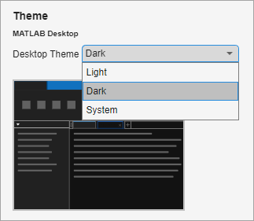
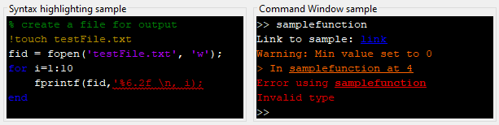
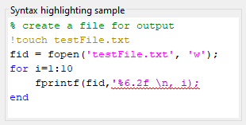
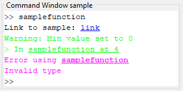

Change Desktop Theme and Colors
You can use themes to change the colors of the MATLAB® desktop, for example, by selecting a dark theme. You also can further customize the colors of the MATLAB desktop, including the text and background colors, syntax highlighting colors, and output colors.
Select Theme
Since R2025a
Windows® and macOS systems support light and dark color schemes. By default, MATLAB is configured to match the current operating system color scheme. If the selected color scheme for the operating system changes, the colors of the MATLAB desktop change to match the new scheme.
To change the desktop color theme:
On the Home tab, in the Environment section, click Settings.
Select MATLAB > Appearance.
Select a theme from the Desktop Theme list. For example, select
Darkto select the dark theme orSystemto select the theme that matches the current operating system scheme.The MATLAB Appearance Settings page shows a preview of the selected theme.

By default, the colors of figures and apps automatically update to match the selected MATLAB desktop theme. To override the desktop theme for figures, in the MATLAB > Appearance settings, select a theme from the Figure Theme list. For more information, see Graphics and App Themes.
After selecting a theme, you can further customize the colors of the MATLAB desktop by selecting MATLAB > Appearance > Colors and changing the colors in the Desktop tool colors, MATLAB syntax highlighting colors, and MATLAB output colors sections. MATLAB saves your color customizations for each available theme. If you customize the colors of the desktop and then the MATLAB theme changes to a new theme or to match a change to the operating system color scheme, your customizations are saved.
Change Text and Background Colors
You can change the text and background colors for certain desktop tools, including the Editor, Live Editor, Command Window, Files panel, Workspace panel, and Import Tool.
To change the text and background colors:
On the Home tab, in the Environment section, click Settings.
Select MATLAB > Appearance > Colors.
In the Desktop tool colors section, use the Text and Background fields to change the colors. For example, select white for the text color and black for the background color.
Before R2025a: Select MATLAB > Colors and in the Desktop tool colors section, clear the Use system colors check box to enable the Text and Background fields.
The Syntax highlighting sample and Command Window sample areas show a preview of the selected colors.

To restore the default text and background colors, click the Restore Default Colors button at the bottom of the MATLAB Appearance Colors Settings page.
The Live Editor automatically selects colors for titles and headings based on the
selected background color. To further customize the colors of titles and headings,
use the Customize Styles dialog box or the matlab.fonts settings.
For more information, see Change Fonts
and Colors in the Live Editor.
Change Syntax Highlighting Colors
MATLAB conveys syntax information in code using different colors. This
feature, known as syntax highlighting, helps you to identify syntax elements, such
as if/then/else statements, at a glance. Syntax highlighting
appears in code files, in code you enter in the Command Window, and in error and
warning messages. It does not appear in other kinds of output.
To change the colors used for syntax highlighting in MATLAB code:
On the Home tab, in the Environment section, click Settings.
Select MATLAB > Appearance > Colors.
Before R2025a: Select MATLAB > Colors instead.
In the MATLAB syntax highlighting colors section, use the Keywords, Comments, Strings, Unterminated strings, System commands, Syntax errors, and Validation sections fields to change the colors. For example, select magenta for the strings color and purple for the unterminated strings color.
The Syntax highlighting sample area shows a preview of the selected colors.

To restore the default syntax highlighting colors, click the Restore Default Colors button at the bottom of the MATLAB Appearance Colors Settings page.
For more information about syntax highlighting, see Check Syntax and Autocomplete Code as You Type.
Disable Syntax Highlighting
To disable syntax highlighting, in the Settings window, select MATLAB > Editor/Debugger > MATLAB Language. Then, in the Syntax highlighting section, clear the Enable syntax highlighting check box.
Before R2025a: Select MATLAB > Editor/Debugger > Language instead.
Syntax Highlighting for Other Languages
The Editor also provides syntax highlighting for other languages. To change the syntax highlighting colors for other languages, select MATLAB > Editor/Debugger > Other Languages and select from the available languages. Then, change the colors for that language. To disable syntax highlighting for the language, clear the Enable syntax highlighting check box.
Before R2025a: Select MATLAB > Editor/Debugger > Language instead.
Change Output Colors
MATLAB uses different colors to identify errors, warnings, and links in Command Window and Live Editor output.
To change the colors used for errors, warnings, and links in output:
On the Home tab, in the Environment section, click Settings.
Select MATLAB > Appearance > Colors.
Before R2025a: Select MATLAB > Colors instead.
In the MATLAB output colors section, use the Error text, Warning text, and Hyperlinks in Command Window fields to change the colors. For example, select magenta for error text and green for warning text.
The Command Window sample area shows a preview of the selected colors.

To restore the default output colors, click the Restore Default Colors button at the bottom of the MATLAB Appearance Colors Settings page.
Change Programming Tools Colors
In the Editor and Live Editor, MATLAB uses additional colors to identify Code Analyzer messages, variables, and functions. To change these colors, go to the Home tab, and in the Environment section, click Settings. Then, select MATLAB > Appearance > Colors > Programming Tools.
Before R2025a: Select MATLAB > Colors > Programming Tools instead.
Code Analyzer Colors
To change the colors used to identify Code Analyzer messages in the Editor and Live Editor, in the Code analyzer colors section, select colors from the Warnings, Autofix highlight, and Info fields. To disable highlighting autofixes in the Editor and Live Editor, clear the Autofix highlight check box.
For more information about using the Code Analyzer, see Check Code for Errors and Warnings Using the Code Analyzer.
Variable and Function Colors
When you select a variable or function in the Editor or Live Editor, MATLAB highlights all occurrences of that specific variable or function. To change the color of this highlight, in the Variable and function colors section, select a color from the Automatically highlight field. To disable automatic highlighting in the Editor and Live Editor, clear the Automatically highlight check box. For more information about automatic highlighting, see Find and Replace Functions or Variables in Current File.
MATLAB also uses text of a different color to call out variables with shared scope in the Editor and Live Editor. To change the color of variables with shared scope, in the Variable and function colors section, select a color from the Variables with shared scope field. To disable calling out variables with shared scope in the Editor and Live Editor, clear the Variables with shared scope check box. For more information about variables with shared scope, see Check Variable Scope in Editor.
See Also
matlab.fonts Settings | Settings Window